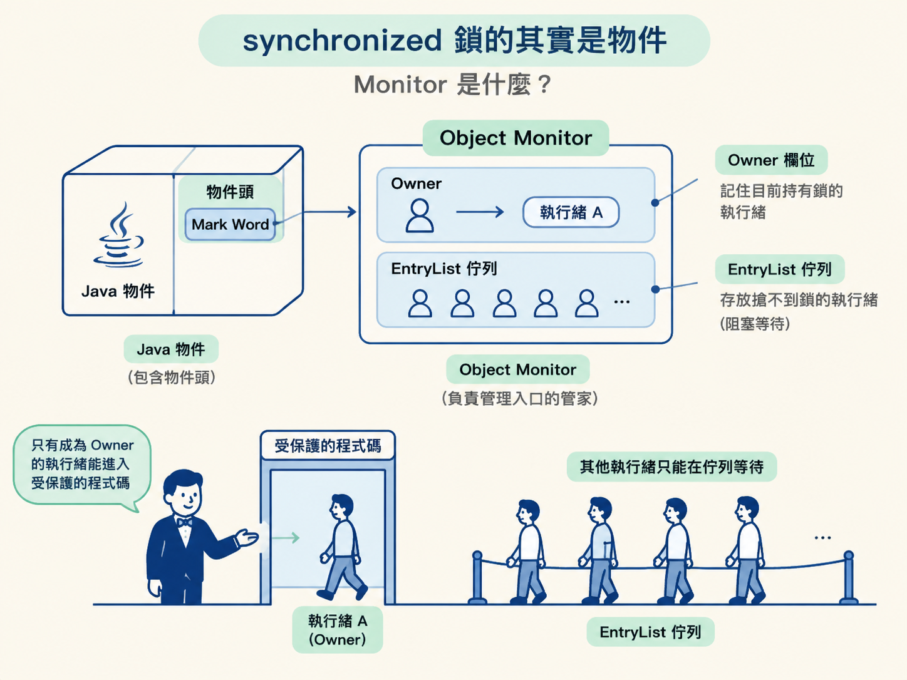
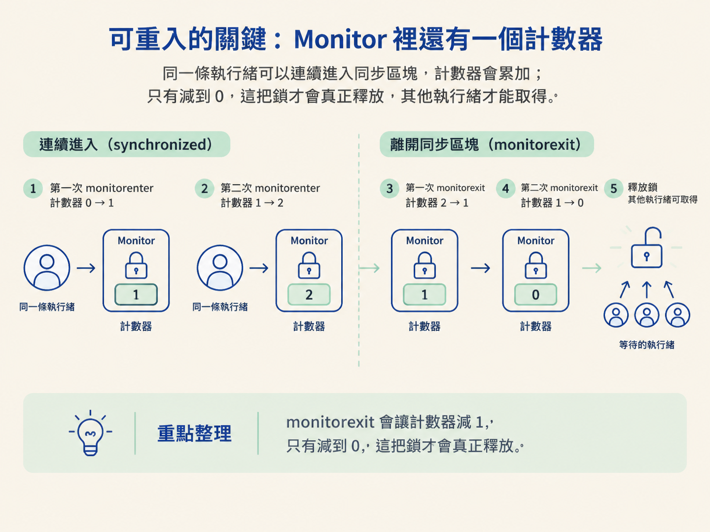
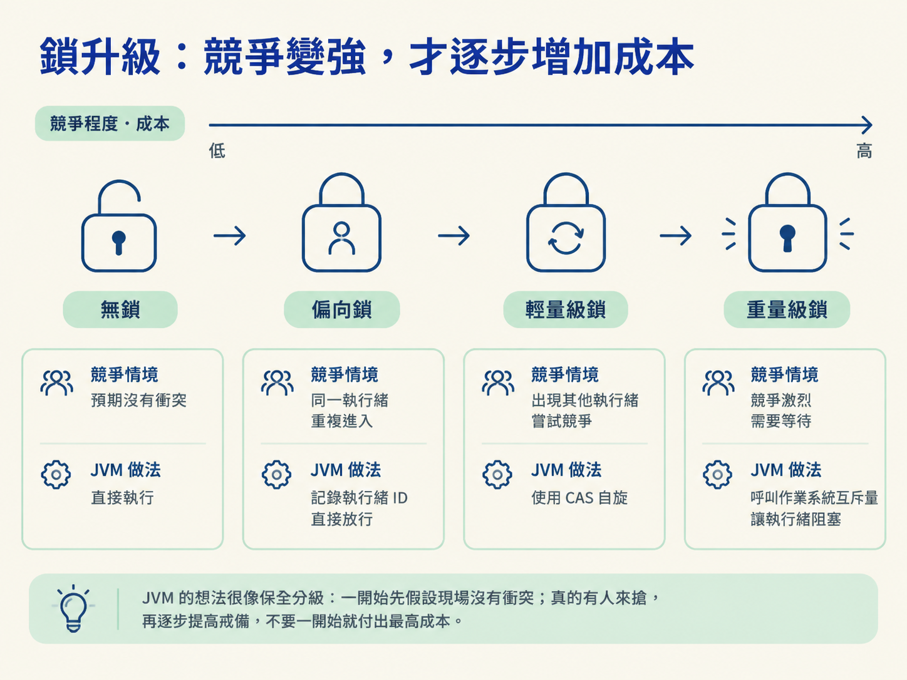

兩個執行緒同時扣減同一筆庫存時，程式碼看起來只扣一次，結果卻偶爾對不上。你在方法上補上 synchronized，問題似乎就消失了；但如果接著被問：「它到底鎖住什麼？鎖的狀態記在哪裡？」只回答「它可以保證執行緒安全」，通常還不夠。
這一節會把 synchronized 拆開來看。它鎖住的不是一段抽象的程式碼，而是某個物件；鎖的狀態會記在物件頭裡，並且關聯到一個 Object Monitor。JVM 還會根據執行緒之間的競爭程度，讓鎖從較輕的狀態逐步升級到較重的狀態。
把這條線串起來，你就能理解它為什麼有效，也能回答面試時常見的追問：Monitor 做了什麼？為什麼可以重入？鎖又為什麼要升級？
在 Java 裡，任何物件都可以拿來當鎖。原因是每個物件在記憶體中都有物件頭（Object Header），而物件頭中的 Mark Word 區段，會在需要時關聯到一個 Object Monitor。
可以把 Monitor 想成一位負責管理入口的管家。當某個執行緒取得鎖，Monitor 的 Owner 欄位就會記住這條執行緒。其他搶不到鎖的執行緒，則會進入 EntryList 佇列並阻塞等待。

所以，synchronized 的競爭其實很具體：一群執行緒來到同一位管家面前排隊，只有成為 Owner 的執行緒，才能進入受保護的程式碼。
如果反編譯一段 synchronized 區塊，會看到 JVM 在同步區塊的開頭與結尾，分別放入兩個指令。
開頭的 monitorenter 代表嘗試取得物件關聯的 Monitor；結尾的 monitorexit 則代表釋放鎖。
這裡有一個容易被忽略的細節：monitorexit 不只會出現在正常結束的路徑上，例外路徑也會有對應的釋放操作。這就是為什麼同步區塊裡即使拋出例外，也不會讓鎖永遠卡住，JVM 會負責把鎖解開。
如果 synchronized 是加在整個方法上，位元組碼的呈現方式會稍微不同。這時不會直接看到 monitorenter 和 monitorexit，而是會在方法的存取標誌上加上 ACC_SYNCHRONIZED。不過，背後使用的仍然是同一套 Monitor 機制。
Monitor 不只記錄 Owner，還會維護一個計數器。這個計數器正是 synchronized 能夠「可重入」的原因。
當執行緒執行 monitorenter 時，如果計數器是 0，表示目前沒有執行緒持有這把鎖。它取得鎖、成為 Owner，計數器加 1。
如果同一條執行緒再次進入由同一把鎖保護的程式碼，JVM 不會把它擋在門外，而是讓計數器再加 1。這就是可重入：同一條執行緒可以重複取得自己已經持有的鎖。
離開同步區塊時，monitorexit 會讓計數器減 1。只有當計數器一路減到 0，這把鎖才算真正釋放，其他執行緒才有機會取得它。

這個設計解決了一個很實際的問題：方法 A 持有一把鎖，接著呼叫方法 B，而方法 B 也使用同一把鎖。如果鎖不可重入，同一條執行緒會因為等待自己手上的鎖而死鎖。
在 JDK 1.6 之前，Monitor 底層直接依賴作業系統的互斥量（Mutex）。執行緒一旦搶不到鎖，就可能從使用者態切換到核心態，再由作業系統把它掛起。
這種切換本身就有成本。有時候，同步區塊裡真正要執行的業務程式，反而還沒有執行緒掛起與喚醒所花的時間多。
因此，在那個年代，只要看到 synchronized，大家很容易把它和「重量級鎖」連在一起。就像只是要切一小塊水果，卻搬出一台大型機具，工具本身的成本可能比工作還高。
JDK 1.6 引入了鎖升級機制，把鎖的狀態記在物件頭裡，讓 JVM 可以根據實際競爭情況動態調整。
整體路徑可以看成四個階段：無鎖、偏向鎖、輕量級鎖、重量級鎖。JVM 的想法很像保全分級：一開始先假設現場沒有衝突；真的有人來搶，再逐步提高戒備，不要一開始就付出最高成本。

| 鎖狀態 | 適用情境 | 做法 |
|---|---|---|
| 偏向鎖 | 只有同一個執行緒反覆進出同步區 | 物件頭記下執行緒 ID，下次直接放行，連 CAS 都不用做 |
| 輕量級鎖 | 有第二個執行緒來，但只是短暫競爭 | 改用 CAS 自旋嘗試取得，搶到就繼續執行，不必掛起 |
| 重量級鎖 | 自旋很久仍拿不到，或競爭非常激烈 | 呼叫作業系統互斥量，讓執行緒真正阻塞並掛起 |
這幾種狀態背後，其實是在比較「多花多少力氣才划算」。
只有一條執行緒反覆取得鎖時，物件頭記住執行緒 ID 就夠了，成本幾乎和不加鎖一樣。出現短暫競爭時，讓執行緒在門口多等一下、持續自旋，通常比把它送去睡覺，再花成本叫醒它更有效率。
但如果競爭持續很久，自旋就會變成白白消耗 CPU。到了這個時候，讓執行緒阻塞，反而比一直忙等更划算，重量級鎖才會登場。
因此，鎖升級的根本目的不是讓鎖變得越來越複雜，而是把昂貴的作業系統切換留到真正需要的時候。JVM 觀察到，許多鎖根本沒有多執行緒競爭，甚至總是由同一條執行緒反覆取得，偏向鎖就是為這類情境設計的。
synchronized 鎖的是物件，物件頭中的 Mark Word 會關聯到 Monitor。Monitor 的 Owner 記錄鎖的持有者，計數器則讓鎖具備可重入能力：monitorenter 讓計數器加一，monitorexit 讓計數器減一，直到減到零，鎖才真正釋放。JDK 1.6 引入鎖升級，讓鎖依照競爭程度，從無鎖、偏向鎖、輕量級鎖一路升到重量級鎖，目的是把使用者態到核心態的昂貴切換留到真正必要的時候。
到這裡可以把 synchronized 放在一條清楚的概念鏈上：物件提供鎖的載體，物件頭記錄鎖的狀態，Monitor 管理持有者與等待者，計數器處理可重入，而鎖升級則負責在效能與競爭之間取得平衡。
不過，synchronized 是 JVM 提供的自動化機制，能調整的地方有限：不能設定公平性、不能中斷等待中的執行緒，也只有一個等待佇列。當需求需要更多彈性時，就輪到 ReentrantLock 上場；它的底層是一個叫 AQS 的同步器框架。下一節會看到，AQS 如何用一個 state 加上一條佇列，支撐起整個 JUC 家族。